Project 5 / Face Detection with a Sliding Window
Baseline Implementation With HoG Cell Size = 3. Linear SVM Threshold = 0.7.
Introduction
The goal of this project was to detect faces in an image by way of sliding window classification. In particular, we were asked to implement the sliding window detector described in Dalal and Triggs (2005). This detector makes use of the HoG (histogram of gradients) feature descriptor. More specifically, the HoG feature descriptor is used to create a face 'template' using training data. Given a test image, one simply 'slides' across the image at multiple scales, each time taking a template size HoG cut-out and comparing to the trained template. If a match is found, the bounding box of the cut-out is characterized as having a face contained.
This reports will proceed as follows: First, I will describe the methodology of the baseline pipeline implementation and show the relevant results across multiple HoG cell sizes. Then, I will describe the methodology and show the results for the bells & whistles items I've completed (implement my own HoG descriptor, and utilize additional classification schemes (neural net, 10-nearest neighbor)). Finally, I will show some of the actual test images with my predicted bounding boxes/ground truth bounding boxes drawn.
Baseline Implementation
Methodology
1. Calculate HoG features for each of the positive training examples (i.e. training examples of faces) and store this data. Each of these examples is 36x36 pixels and will be the basis for our 'template'. Given that I implemented my own HoG feature detector for Bells & Whistles credit, I will go into more depth as to the calculation methodology in a later section. Note, however, that there is a choice that needs to be made regarding the cell size for the HoG feature detector. 'Cell Size' references how many pixels should be grouped together when creating the relevant histogram. I tried 3 different cell sizes (6, 4, 3), and I show and discuss the results of all 3 in the results section.
2. Calculate HoG features for each of the negative training examples (i.e. examples of not faces). Note that these examples are of arbitrary size, and contain potentially many 36x36 examples of not faces. Thus, I randomly sample 36x36 (remember, this is our 'template' size) blocks from various negative examples to complete this step (i.e. randomly sample a negative example, then randomly sample a 36x36 patch). Note, it was suggested to also sample at multiple scales, but I seemed to get reasonable results without doing so.
3. Train a linear SVM using the positive/negative HoG feature descriptors. There is a free parameter here in terms of the lambda that can be chosen. In my implementation I used a lambda of 0.0001. This classifier will be used later on during the sliding window detection. Note that we can visualize our learned detector (i.e. our template). Here is mine - as expected, it looks vaguely like a generic face (the 'eyes' are especially prominent):

4. This step is really the heart of the sliding window methodology. Effectively, we take sliding 36x36 patches of each test image, calculate the HoG feature descriptor for each patch, and run each descriptor through our trained SVM. If the score is above a certain threshold (I chose 0.00), I mark the pixels of this patch down as a face. Note that the sliding patches may be overlapping (I move the patch over/down 1 pixel on each iteration). Additionally, note that this process of sliding/calculating HoG descriptors/scoring is run at multiple scales. Thus, rather than change the scale of the 'template' to try to fit potential faces in the test image, we instead change the scale of the test image to try to fit the template we already have on hand.
5. Run non-maximal suppression on potentially overlapping bounding boxes/face identifications. Using the methodology described in step 4 will often result in the same face being marked multiple times as a different face each time (this is the result of sliding over only 1 pixel at a time/ running at multiple scales). To combat this, we can employ non-maximal suppression. Effectively, non-maximal suppression tries to only take the "highest confidence" (highest linear SVM score) patch of all the possible overlapping patches. Additionally, non-maximal suppression in this context ensures that the 'center' of a bounding box is not contained inside another bounding box.
Results

Shown above are three Precision-Recall curves associated with the baseline implementation using HoG cell sizes of 3, 4, and 6 pixels. Their respective accuracies are also printed nearby the respective curve. As the name suggests, Precision-Recall curves effectively try to communicate the trade-off between 'Precision' and 'Recall'. In this context, 'Precision' refers to the percent of reported faces that are correct (i.e. true positives/(true positives + false positives)). 'Recall' refers to the percent of actual faces that were reported (i.e. true positives/( true positives + false negatives)).
Clearly, it appears as though decreasing the number of pixels in each cell yields 'better' results. By 'better', I mean that I am able to achieve the nearly 100% precision at increasingly higher percentages of recall. Along a similar vein, you'll notice that the reported average accuracy monotonically increased as cell size decreases.
This result is fairly intuitive; more granular feature descriptors are going to be less lossy and thus will yield more accurate results. Having said that, this higher accuracy/more preferable Precision-Recall curves are not costless. The smaller the cell size is, the more computationally expensive the pipeline gets (this will be described in more detail in a later Bells & Whistles section). I show a plot of actual running time for the entire pipeline using each of the three cell sizes below:

Bells & Whistles Work
HoG Implementation
Admittedly while using VLFeat's HoG implementation, I was a little unsure of what was really going on under the hood. Thus, I decided to implement my own HoG descriptor. In this section, I will describe the methodology used to calculate my HoG descriptor. Additionally, I will show the results of using my HoG descriptor versus the provided VLFeat HoG descriptor using a cell size of 6 pixels and the baseline linear SVM classifier.
Methodology
1. Get the X and Y gradients of the image by convolving it with the following two filters:
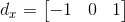 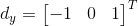2. Calculate the magnitude and orientation for each pixel:
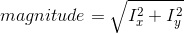 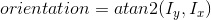3. Adjust orientation angles such that they are unsigned and between 0 and 180
4. Split the image pixels (and in turn the matrix of magnitudes and orientations) into 'cells'. For my implementation, I used cells of 6x6 pixels.
5. For each cell, create a 9 bin histogram (a bin every 20 degrees). Rather than just populating each bin with the appropriate count, use biliniear interpolation to provide a linear weighted proportion (by distance) of magnitude to adjacent bins.
6. Define a 'block' as being a 2x2 matrix of cells. The image is comprised of some number of overlapping blocks (each cell participates in 4 blocks). For each of the four blocks a cell participates in, normalize the cell's histogram with respect to the other cells contained in each block (this yields 4 times the number of histograms for each cell - one for each block normalization). Do this for each cell. Finally, normalize all of the histograms across all cells. The resultant vector of concatenated histograms is your HoG descriptor.
Notice how decreasing the cell size greatly increases the number of computations that need to be carried out - Decreasing the cell size leads to more binning (there are going to be more cells), and more normalization calculations (there are going to be more blocks).
Results
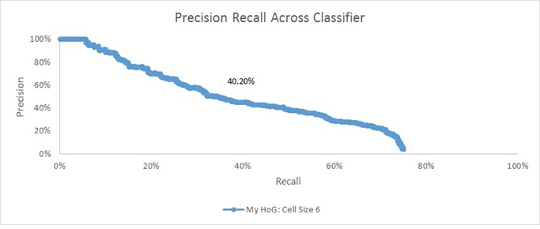Admittedly, I'm a little surprised at how different my result is from the result I got using VLFeat's HoG function (average accuracy here of 40.20%, whereas there an average accuracy of 85.50%). Having said that, on an absolute basis, it's still significantly better than chance. This difference of results likely stems from two sources. First, and perhaps most importantly, I think this is largely a result of poor parameter tuning. When I ran VLFeat's HoG implementation, I was able to use an SVM score threshold of 0 to get the result in the previous section. When I ran my HoG implementation at a threshold of 0, however, I got almost nothing being marked as a face. Thus, I decided to re-run with a threshold of -0.5 to get this result here. I'm sure if I were to lower the threshold further, I could probably squeeze some better performance out of my implementation. Unfortunately, each run of the pipeline using my HoG implementation takes nearly an hour which made me apprehensive to engage in too much parameter tuning.
In addition to parameter tuning, I also feel like this difference in results to a lesser extent can be traced to my implementation not including certain small details. For example, I believe in the original paper, they suggest to use Gaussian Downweighting of magnitudes prior to voting and I don't include that. Having said all of this, my aim in completing this Bells & Whistles item was simply to get a better feel for what the HoG descriptor is. Insofar as I now have a better idea of where the dimensionality of the descriptor comes from, I'm comfortable with the results I have.
Using Additional Classifiers
Another Bells & Whistles item I completed was using multiple classifiers. In particular, I implemented/used a simple Neural Net classifier and a Nearest Neighbor classifier. Below, I briefly describe the methodologies of these two classifiers and I show the results of using them in place of the baseline Linear SVM. Additionally, I also show the results of combining them into an ensemble. In this case, each classifier votes as to whether or not it thinks the patch is a face, and if two or more think it's a face then I label it a face.
Neural Net Classifier
My Neural Net classifier implementation is very simple. It is a single-layer implementation that inherently has no hidden layers. Effectively, it amounts to trying to use backpropogation to iteratively determine a weight matrix that can transform our HoG feature descriptor vector into an output vector that corresponds to a class.
My neural net training implementation consists of the following steps:
1. Create an initial random weight matrix. It should be of the dimension HoG Feature Size + 1 x Output Vector Size. The +1 is there on the number of rows to account for a bias term, and in my implementation, the output vector size is 2 (one for face and the other for not-face).
2. Randomly sample a train image (either positive or negative), and 'Feed Forward' the image's descriptor. This Feed Forward process consists of simply multiplying the feature descriptor by the weight vector, and then applying an activation function to the result. The result of applying the activation function is the 'predicted' output vector. The activation function I use is the hyperbolic tangent function:
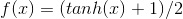3. This step is comprised of backpropogation and is really the heart of this method. Effectively, we would like to minimize the difference between our known output vector and the predicted/resultant output vector. To figure out how our weight matrix needs to change to minimize this difference, we use the following equations:
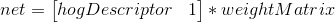 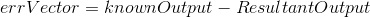 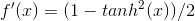 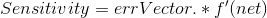 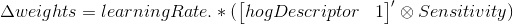Note, there is a free parameter here in terms of learningRate. Effectively, this parameter controls how much weights can change from one iteration to another. I pick a fairly low value of 0.05.
4. Sum the suggested change in weights to the current weights, and repeat steps 2-4 n number of times. Personally, I repeat these steps a static 20,000 times. Alternatively, one could use a validation set and set the stopping condition based on the error rate of the validation set.
Note, the output of the iterative process is a final set of weights. Thus, at test time, we simply 'Feed Forward' the test HoG descriptor with the weights gotten from training. The resultant output vector indicates to us the class.
Nearest Neighbor Classifier
The nearest neighbor classifier is fairly intuitive and easy to understand. There is no explicit training step. At test time, you simply find the distance between the test descriptor and all of the training descriptors and you return the mode label of the k- nearest neighbors (I chose k to be 10).
Having said that, the Nearest Neighbor implementation I used is slightly different from what I just described. It turns out that for problems like this where the feature dimensionality is high and the number of training examples is also large, calculating the euclidean distance over and over again turns out to be not computationally feasible. Thus to facilitate a more efficient search, I use Approximate Nearest Neighbors. I did not write this implementation myself, so I won't give a step by step methodology, but I'll just give some high level intuition as to what it is. Essentially, the goal of approximate nearest neighbor is to return sufficiently nearby points to help meet the current goal. It turns out that in many cases, you don't actually need the exact nearest point, and instead a nearby point can suffice. By guaranteeing that we will find the 'approximate nearest points', we effectively limit the number of comparisons that need to be made, and hence can reduce the computational cost associated with the search.
Results

The results above show Precision-Recall curves and average accuracy for each of the different classifiers (Linear SVM, Neural Net, and 10-Nearest Neighbor (Approx.)). Additionally, it shows the results for a'Combined' version of the classifiers. Note here that to produce these results I changed HoG cell size to 6 just for run-time concerns. Also, note that the Linear SVM result here does not exactly match the results shown for HoG Cell Size of 6 in the Baseline Implementation section (84.60% here v. 85.50% there). This isn't unexpected - they were generated on different runs of the code, and since we select negative training examples randomly, it's likely that results might vary slightly between runs.
Clearly, the Linear SVM produces the 'best' unilateral results. It's Precision-Recall curve is furthest out to the top right and it has the highest accuracy (84.60%). Interestingly, the basic Neural Net I used was able to generate similar results. It has an accuracy of 80.40% and a curve that is very close to that of Linear SVM. Unsurprisingly, the approximated 10-nearest neighbor has the 'worst' results; it has an average accuracy of 37.90% and its curve is very far to the bottom left of the plot. Having said that, it's worth noting that the 10-Nearest Neighbor actually qualitatively does a good job of finding nearly all the faces in each test image. The problem is that it just reported too many false positives. Conversely, the Linear SVM and Neural Net qualitatively seemed to both 'miss out' on a fair amount of actual faces (although they sometimes find different ones), but they produce far fewer false positives. This observation motivated me to create an 'ensemble' of the 3 classifiers (the yellow 'Combined Voting' line).
My 'Combined Voting' ensemble works as follows. At each step of the sliding window, I have each of the three classifiers individually say whether or not they think the patch is a face. If two or more vote that it is a face, then I retain that patch as being a face. By doing this, I can take advantage of the fact that they all seem to report slightly different sets of faces while having vastly different rates of reporting false positives.
The results of my 'Combined Voting' ensemble are very encouraging. As I had hoped, it has a 'better' Precision-Recall curve (closer to the top right of the plot), and higher average accuracy than any individual component. Given the results above, I think future next steps would be to re-run this analysis using a smaller HoG cell size (perhaps 3). If the learnings from the chart above hold true at this smaller cell size (and I don't see why they wouldn't), then I should be able to generate an average accuracy higher than the 92.10% I got with Linear SVM alone in the Baseline Implementation section.
Actual Results on Test Images
While the Precision-Recall curves do a good job of quantitatively describing the performance of our sliding detector pipeline, I think it's also valuable to actually look at some of the resultant test images/bounding boxes drawn. Here are a small sample of results using the Baseline Implementation with a HoG cell size of 3 (my implementation that had the best results):
Star Trek Image - This is probably the best-looking result I have from the main dataset given in terms of finding all of the true positives and reporting no false positives:

Whiteboard Image - The detector in this example finds all the faces but reports a few false positives. Having said that, what I like most about this example is that many of the faces are just drawings rather than actual human beings.

Another Whiteboard Image - Similarly to the last one, I just like that the detector is able to detect drawings of faces pretty well.

Playing Cards - Along a similar vein, the detector here is able to detect almost all of the faces on a set of playing cards. I think that's pretty remarkable.

Note that I could get all of the images above to report fewer/no false positives by simply raising the threshold for the Linear SVM score required to be 'called' a face. In doing so, however, I would almost certainly lose detection of some of the faces found above.